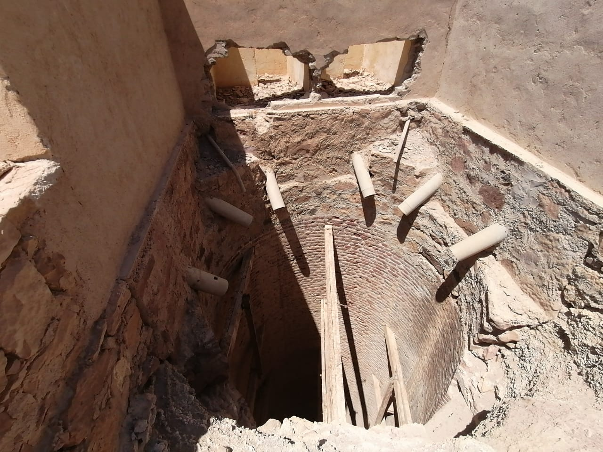

Niesamowita okazja na odrobinę adrenaliny podczas wakacji w Marsa Alam! Przejażdżka quadami po pustyni, w pobliżu zapierających dech w piersiach, masywnych gór. Na quadach jedzie się ok 2h. W czasie jazdy jest przerwa w wiosce beduińskiej gdzie podawana jest herbata beduińska oraz odbywa się przejażdżka na wielbłądzie. Wycieczka quad safari w Marsa Alam dostepna jest zarówno rano, jak i popołudniu. Na wycieczkę koniecznie trzeba zabrać okulary przeciwsłoneczne oraz arafatki by zasłonić usta i nos przed piachem. Uwaga! Ta wycieczka nie jest odpowiednia dla kobiet w ciąży oraz osób z problemami z kręgosłupem.
Na quad safari warto wziąć sportowy, wygodny strój oraz sportowe buty. Pamiętajcie, że z wycieczki wrócicie mocno “zakurzeni”
Osoba, która po Was przyjeżdża, ma Wasz numer pokoju i powinna go podać. Jeżeli będziecie mieli problem ze zrozumieniem numeru pokoju, pokaże Wam ten numer w telefonie.
Hotele w rejonie Marsa Alam są bardzo porozrzucane i dzieli je duża odległość dlatego godziny wyjazdu/ powrotu z hotelu są różne. Ale quady poranne zwykle odbywają się w godzinach 8-12, popołudniowe w godzinach 14-19.
Płatność jest podczas wycieczki pierwszej osobie, która upomni się o pieniądze i zna Wasz numer pokoju oraz kwotę, którą powiniście zapłacić. Zwykle płatność odbywa się dopiero na pustyni
Przyjmujemy płatność w dolarach, euro, funtach brytyjskich, funtach egipskich. Przeliczamy cenę wycieczki po aktualnym kursie i zaokrąglamy do pełnego euro, funta brytyjskiego bądź pięciu funtów egipskich. Nie akceptujemy płatności kartą. W wyjątkowych sytuacjach możemy zaakceptować płatność przelewem, choć preferujemy gotówkę.
Poza pozycjami zawartymi w liście “Dodatkowo płatne” nie ma na wycieczce żadnych dodatkowych kosztów.